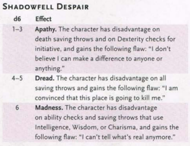
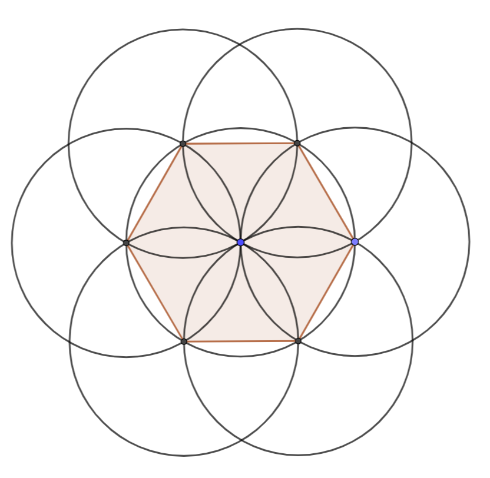

Created Wednesday 14 September 2022
GOAL: Investigate the source of the disquieting sounds coming from the shrine at night and ascertain the priest and his son are unharmed; later to rehallow the ground and banish the wights of darkness plaguing it.
MOTIVATION: The party is recruited by Guildmaster Hawk; Crystalthorp has heard of Aags's exploits in Gainrock (they recognise him by the description of his clothes and baldness).
DEADLINE: A new full moon comes in a few days; the husbandmen fear foregoing a sermon just before harvest, during haymaking time.
REWARD: Favour with the guildmaster
Synopsis
The ongoing efforts of the Way, in particular their extracting magick from the Earth has weakened the barrier between the World and Shadowfell.
Consequently, on a night of the new moon, the veil has torn at a nexus of woodland magick - the Shrine of Frey attended by the villagefolk dwelling about Crystalthorp on the eve of every full moon.
The shrine has been invaded and overrun by wights of darkness. They slew Walbert as he preyed to his Goddess before turning at his son, Rodwin. Their restless ghosts haunt the unhallowed halls till the last of the wights is banished and the portal to Shadowfell closed.
Characters
Temple of Frey

Description
The shrine of the farmers' goddess Frey bids all men to pause awhile and ponder the moment. The air teems with noises of life large and small while wild fragrances please the soul. The shrine is simple, built of sturdy whitish grey stone; it stands atop a knoll overlooking greening pastures in the West and the gilt blankets of corn in the East while woodlands thrive northward hence.
(to be read only before the area is cleared)
Alas, something dark has befallen this shrine of peace. As ye draw near, the birdsong dies and the grass is withered and dead; and evil stenches banish the fragrant winds. The dark, paneless windows offer no consolation and despair holds illimitable dominion over all.
Throughout the entire map the players are under the effect of Shadowfell Despair until they destroy the alkilith in Refectory. Every six hours and following every critical hit and every lingering injury, each player makes a roll on the following table (DMG pg 52)

Shrine
- In the centre of the room grows a corrupted goodberry bush. If its fruit is eaten before the shrine had been cleansed, the consuming creature takes 2d12 poison damage.
- The body of Walbert the Priest can be found lying lifelessly before the altar. He is horribly mangled. A successful DC 12 Intelligence Investigation check reveals the wounds resemble terrible hound bitemarks.
- Walbert's ghost weeps over his body but his attention is drawn to a shattered effigy of Frey lying besides the corpse.
- If the party tries to approach Walbert's ghost or leaves the Area, the Ghost begins to scream uncontrollably. Jealous of the party's beating hearts, he summons Shadows hiding in the recesses of the shrine to kill the party, triggering the following encounter.
Easy Encounter
Experience: 700
- 7 Shadows [MM pg. 269]
Apothecarium
- Searching the south-wall medical cabinet reveals a bottle labelled ᚩᚷᛚ᛫ᚫᚷᛖᚾᛋᛏ᛫ᛠᚠᛁᛚ or Oil against Evil. See page 81 in DD.
Bedroom
- An ancient copy of Elderwrit may be found besides the bedding.
- The following extract is found in the chest along with a piece of rope tied at one end to a pointy stick and a lean long piece of straight wood:
It is þus a fair Iudge may only deem Man a creature ſupremely þankleß & cruel in view of his Treatment of þe Dwarves/// a Race to whom more þan any oþer he owes a Tribute For when Man was ſtill young and his hands were unſtained by blood/ while he ſtill roamed þe Groves & Valleys of þe Glorious Werheim · þe Dwarues haue maſtered þe Art of Earth-Meaſuring Till þis Day þis ancient Craft is þe ſtable of learning of any Dwarfman: oft paſſed from Faþer to Son: Þe fact þat Men - barring craftsmen and þose of very great learning - haue no knowledge of þis diſcipline is an inſult to our wits and þe Supreme Gods who haue endowned us þerewith Having ſpent much time amongſt þis gifted folk · I preſent in þe following pages an Introduction to Earth-Meaſuring as taught in þe Homes of our Dwaruen neighbours Chapter I We ſhall begin as any boy of dwaruen faþers: by familiarising ourſelues with þe two great Tools of Earth-meaſuring: þe Compaß & þe Straightedge: Þe firſt is uſed to make rings of any girth while þe oþer allows a man to draw lines of any length Our firſt figure to conſtruct uſing þeſe wonderful Tools will be þe euen ſixſider: A man proceeds as follows: Form a ring of any girth and þen make anoþer centered at þe outline of þe firſt: where þe two rings meet/ make anoþer of he same girth and continue ſo until furþer repetition would yield identical rings to þose already drawn Now link þe points where þe rings drawn after þe first meet it

Library
The library entryways are blocked by a magickal puzzle. There is a hammer, a nail, and a piece of charcoal lying besides the door. At this point, Walbert regains enough of his sanity to approach the party and explain the puzzle to them. He is extremely unnerved and begs the party so save his son who had fled into the library during the attack to save himself.
The Puzzle
The party must draw a geometrically perfect square in front of the door using the instruments found throughout the dungeon. The exerpt found in Bedroom provides a great hint as one may draw a square into a regular hexagon very easily. Sample solution below:

The Interior
Inside they find Rodwin's corpse collapsed on the ground. A successful DC15 Intelligence Investigation check reveals that he had sustained a head injury during the attack and although he had made it safely into the library, he died of the head-trauma shortly after.
Rodwin's ghost is restless and does not realise he is dead. He starts thanking the party for saving him and enquires into his father's whereabouts. If confronted with the fact he is dead, he forgets the whole encounter with the party and starts the dialogue anew. All the while his father cannot see his son and Walbert becoms frantic the party seems to be talking to no one.
Refectory
The climax of the adventure. As the adventurers approach they can see a large, gaping gate into Shadowfell having formed on the exit-door covering it completely. A successful DC10 Investigation Intelligence check reveals a fungal origin and a successful DC20 Nature Intelligence check reveals its identity as an alkilith.
Hard Encounter
Experience: 1500
- 2 Shadowmastiffs [MPMM]
- 1 Shadowmastiff Alpha [MPMM]
Return
The battle against the shadow mastiffs coupled with the wailing Walbert has drawn considerable attention to the Shrine. Regardless of where the party exits, they are greeted with a throng of men with Guildmaster Hawk standing at the front and Will and his family behind him.
{kind=link}
{kind=link}
{kind=link}